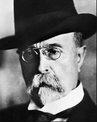

Tabulky v HTML
Slavná osobnost: Tomáš Garrigue Masaryk
| Portrét | Základní údaje | Významné činy | |
|---|---|---|---|
|  | Tomáš Garrigue Masaryk | Masaryk byl celkem sedmnáctkrát navržen na Nobelovu cenu míru. Jméno Tomáše Garrigua Masaryka nese celá řada ulic a náměstí v České republice i v zahraničí. Jeho díla: Jak pracovat? Theorie dějin podle zásad T. H. Bucklea Hus českému studentstvu Naše politická situace Žena u Ježíše a Pavla a mnoho dalších. |
|
| 1850 Hodonín | 1937 Lány | ||
| Československý státník, filozof, sociolog a pedagog, první prezident Československé republiky. K jeho osmdesátým narozeninám byl roku 1930 přijat zákon o zásluhách T. G. Masaryka, obsahující větu „Tomáš Garrigue Masaryk zasloužil se o stát“, a po odchodu z funkce roku 1935 ho parlament znovu ocenil a odměnil za jeho osvoboditelské a budovatelské dílo. |
|||
| Tomáš Garrigue Masaryk | |||
| Wikipedie | |||
Značky a atributy tabulky
- rowspan
- Atribut zajišťující rozpětí přes několik řádků.
- colspan
- Atribut zajišťující rozpětí přes několik sloupců.
- th
- Nadpis kategorie tabulky
- tr
- Vytvoření řady tabulky
- table
- Značka, která zajistí ohraničení celé tabulky
- td
- Data jednotlivých buněk tabulky
- tbody
- Tělo tabulky
- thead
- Záhlaví tabulky
- tfoot